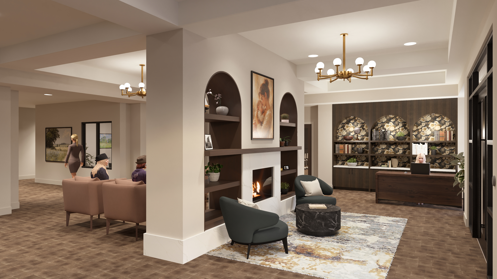
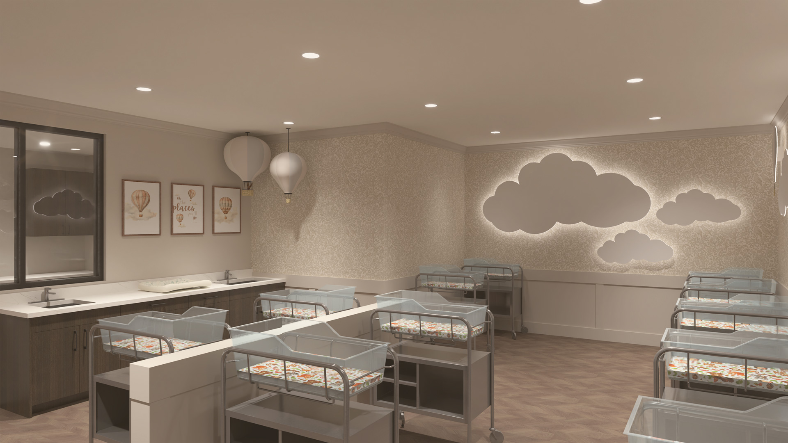

The rest stay
3 nights
$2,100 studio
- A signature welcome gift
- Favorite snacks stocked in your suite
- All meals and room service
Pricing & value
One nightly rate covers your suite, every meal, and staff on call day and night. Below, see our packages, what is included, and how a stay compares with arranging the same help on your own.
Packages
Every package is open to every guest, postpartum or post-surgical. The nightly rate stays the same; longer stays add complimentary extras.
The rest stay
$2,100 studio
The restore stay
$3,500 studio
The renew stay
$4,900 studio



What is included
Private suite, all meals, personal room attendant, 24-hour call staff, welcome gift, and concierge scheduling.
24-hour staffed nursery, basic lactation support, mother’s lounge, fire pit patio, and mothering classes.
Limited help with daily activities, ice packs and recovery supplies, rides to follow-up visits, and free early check-in when available.
Compare · postpartum
| Option | What you get | Typical cost per night |
|---|---|---|
| Levata postpartum stay | Private suite, meals, housekeeping, 24-hour staffed nursery, and lactation support. | $700 studio |
| Piecing it together at home | Overnight newborn care, meal prep, housekeeping, and lactation help from separate providers. | $408–$708 |
| Overnight newborn care only | One 8-hour shift with no meals, cleaning, or daytime help. | $320–$560 |
| Postpartum retreats in other states | Published all-inclusive rates at large cities. | $930–$1,850 |
Compare · post-surgical
| Option | What you get | Typical cost per night |
|---|---|---|
| Levata post-surgical stay | Private suite, meals, room service, room attendant, call staff, and recovery supplies. | $700 studio |
| Hotel plus hired caregiver | Area hotel room plus non-medical caregiver help. | $562–$796 |
| Recovery houses | Short-term lodging near surgeon offices with varying staffing. | From $900 |
| Private-duty nurse at home | Skilled clinical care in your home. | About $1,080 |
Questions about cost?
Our concierge can walk you through dates, packages, and payment options, including gifting a stay.